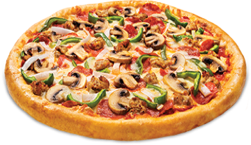

<div ng-switch="vmInvoice.invoiceFactory.houseObject.favorite_pizza">
	<div ng-switch-when="supreme"></div>
	<div ng-switch-when="pepperoni"></div>
	<div ng-switch-when="meat"></div>
	<div ng-switch-when="bbq"></div>
	<div ng-switch-when="veggie"></div>
	<div ng-switch-when="hawaiian"></div>
	<div ng-switch-when="cheese"></div>
	<div ng-switch-default></div>
</div>
